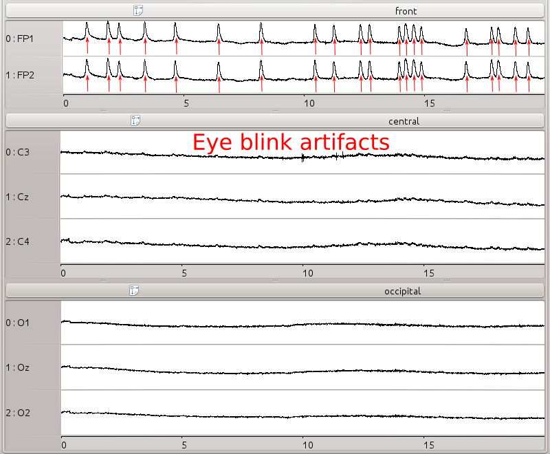
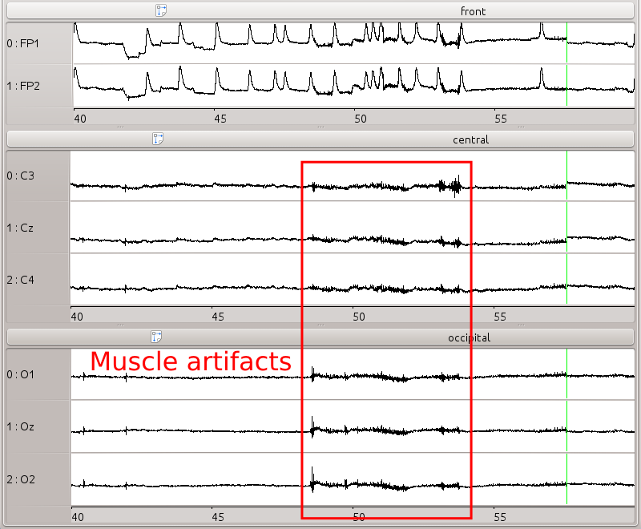
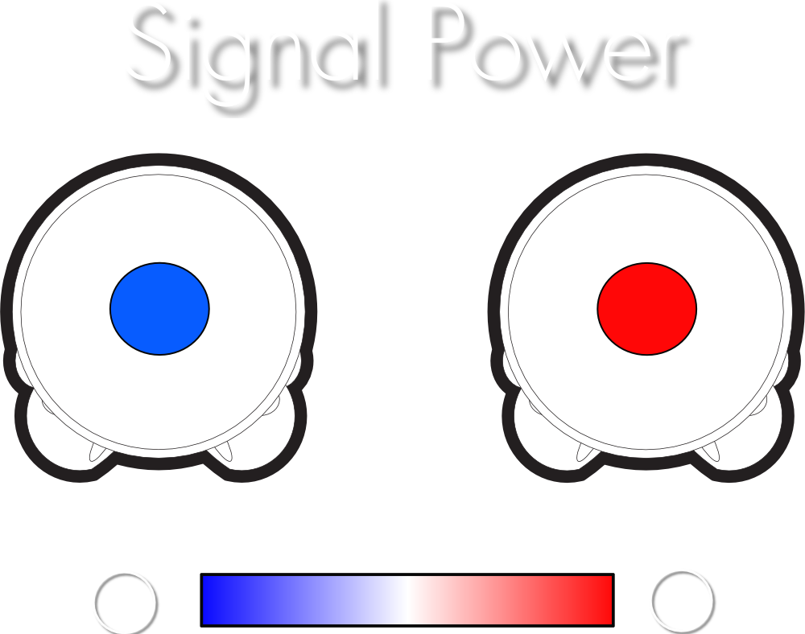
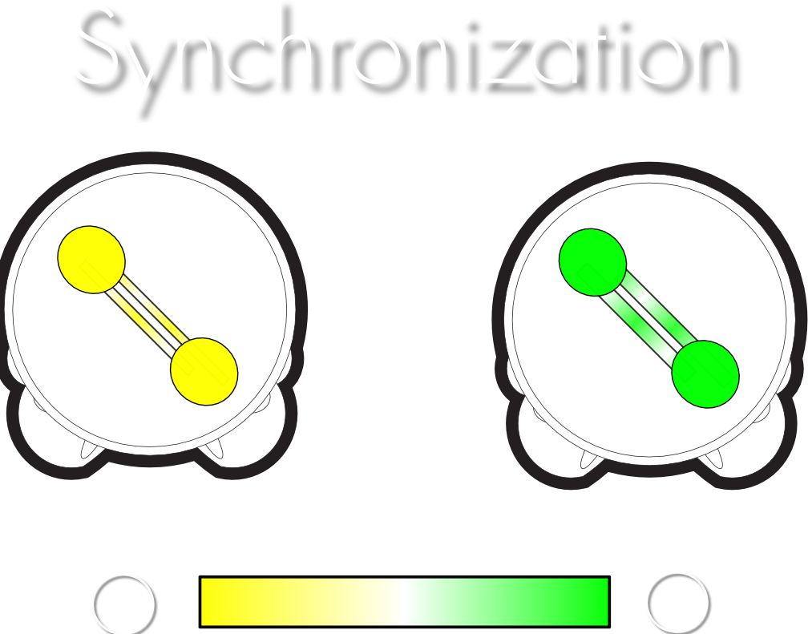
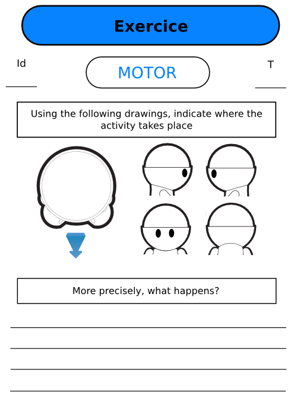

Thinking about abstract commands...
...does not work
at all
.
Thinking about abstract commands...
...does not work
at all
.
Motor Imagery
EEG setup
 
Visualization

Visualization
Supplementary materials
Visualization - bonus track

Pre- and post-test exercices
